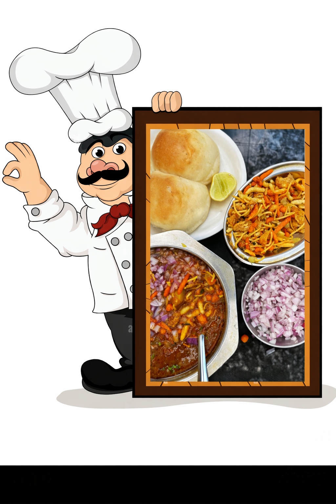

Instant Misal Pav Recipe (Ready in 10 Minutes)
🧺 Ingredients
- Oil – 4 tsp
- Mustard seeds – ½ tsp
- Cumin seeds – ½ tsp
- Asafoetida (hing) – ¼ tsp
- Curry leaves – 8–10 🌿
- Garlic - 8-10 piece
- Onion – 1, finely chopped 🧅
- Red chilli powder – 1 tsp 🌶️
- Besan (gram flour) – 1 tsp
- Sprouted matki – 100 g
- Misal masala – 1 packet 📦
- Salt – to taste 🧂
- Water – as required
💡 Tips for Perfect Instant Misal
- Cook besan properly to avoid raw taste
- Adjust water based on how spicy or thin you like the rassa
- Use spicy misal masala for authentic Kolhapuri-style flavor 🔥
- Best enjoyed hot and fresh

👩🍳 Method
🍽️ How to Serve Misal Pav
- Serve hot misal in a bowl 🔥
- Top with farsan, chopped onion and fresh coriander 🌿
- Add lemon juice for extra tang 🍋
- Serve with buttered pav 🥖
😋 Enjoy Your Instant Misal Pav!
Spicy, comforting and full of flavor — this Instant Misal Pav is a true Maharashtrian delight ❤️